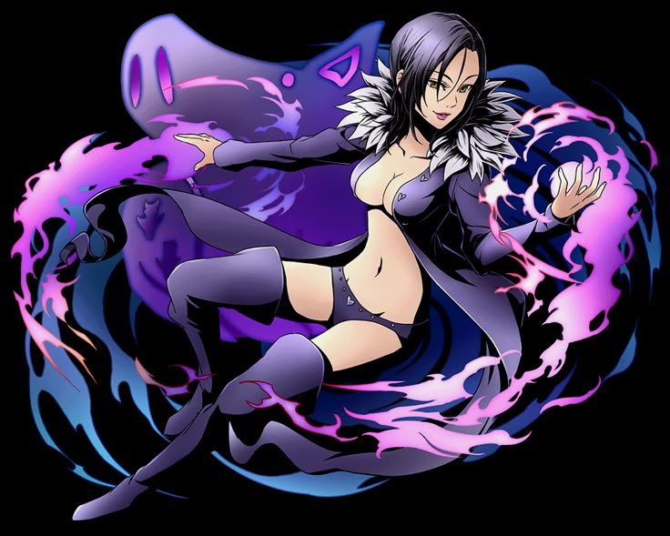

|  | BIOGRAFIA |
|---|---|
|
Merlin é a Maga Suprema de Britânia e a integrante mais inteligente dos Sete Pecados Capitais, carregando o título de Pecado da Gula do Javali. Originalmente vinda de Belialuin a cidade dos sábios, Merlin é a última sobrevivente de um povo que dominava todo tipo de conhecimento mágico. Misteriosa, manipuladora e absurdamente inteligente, ela enxerga séculos à frente dos outros, sempre planejando com cálculos perfeitos. | |
| ARMAS | |
|
Infinity: Infinity é a base de todo o seu poder absurdo. Aldan A Bola de Cristal: Amplifica sua magia Permite vigilância e projeção de feitiços Serve como extensão de sua consciência. | |
| Habilidades | |
|
Magia Absoluta: Merlin domina todos os tipos de magia conhecidos Teletransporte Invocaçao Alteração de tempo Feitiços elementares (fogo, gelo, raio, etc.) Barreira e proteção Metamorfose Aprisionamento dimensional Encantamentos etc. |